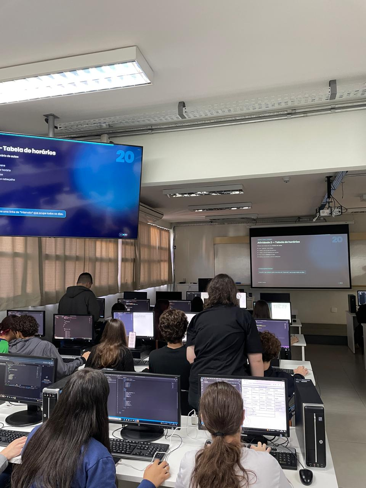

Relatório – 9ª Aula
Data: 07/07/2026
Turma: A
Instrutor:Victor
Tabelas em HTML
A aula começou com uma revisão sobre formulários em HTML bem curta. Em seguida, foi introduzido o conteúdo de tabelas utilizando as tags "table", "tr", "td" e "caption". Inicialmente, a turma demonstrou um certo desânimo e falta de ritmo, que se extendeu até o iníco da atividade prática, mas antes ainda teve uma explicação sobre os conceitos de colspan, rowspan e estilização com propriedades CSS como border-collapse. Na atividade prática, que consistia em criar o próprio quadro de horários escolares, os alunos recuperaram o engajamento e fizeram diversas perguntas. Auxiliei os alunos tirando dúvidas sobre o layout e o design das tabelas, ajudando-os também no envio dos projetos finais para o GitHub antes do encerramento da última aula do semestre.
